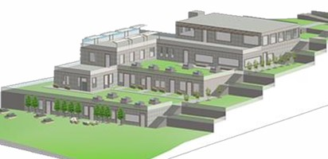
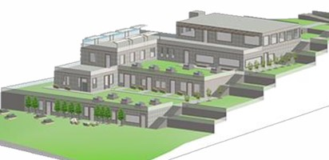
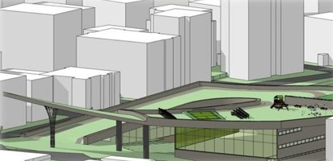
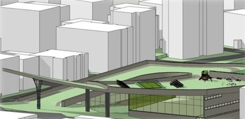
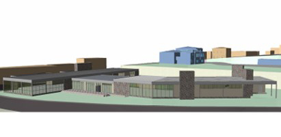
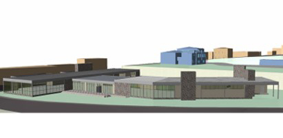

Hello!
I am a student at Mimar Sinan Fine Arts University, in Istanbul. I am currently in my last year of studying. I have always wanted to try coding but thought it was too complicated. This website is a product of me trying to create a place where i can display my projects. Hope you’ll like it!
I am a student at Mimar Sinan Fine Arts University, in Istanbul. I am currently in my last year of studying. I have always wanted to try coding but thought it was too complicated. This website is a product of me trying to create a place where i can display my projects. Hope you’ll like it!
 

 


 
